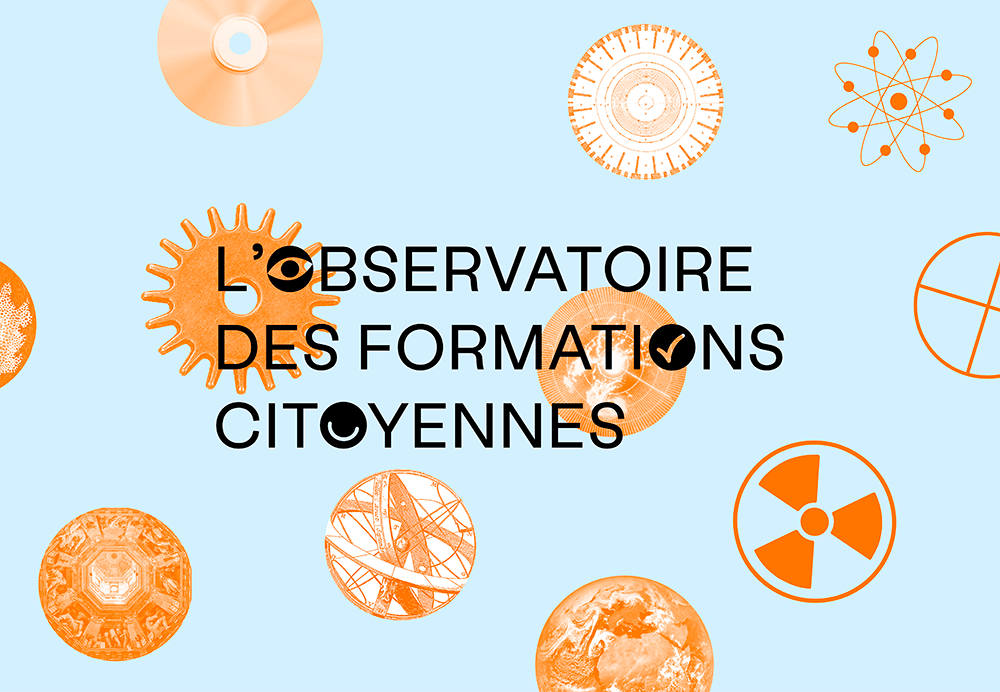
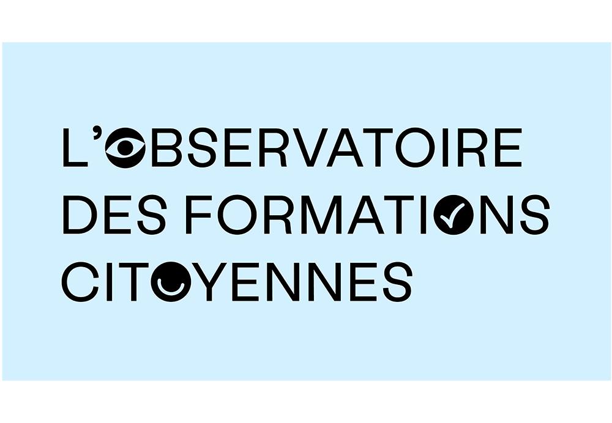
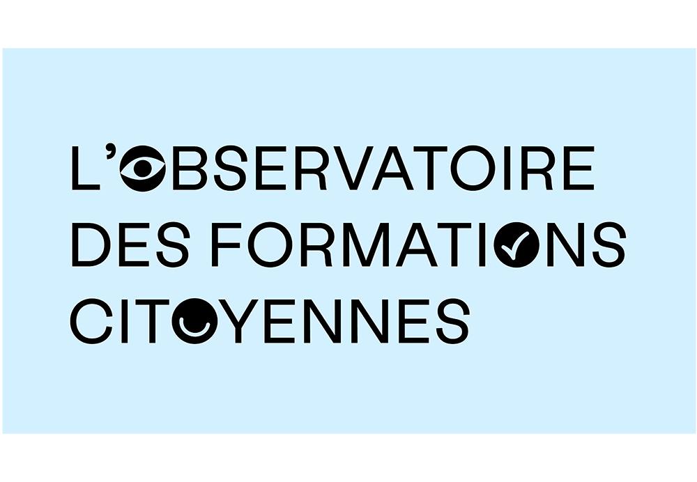
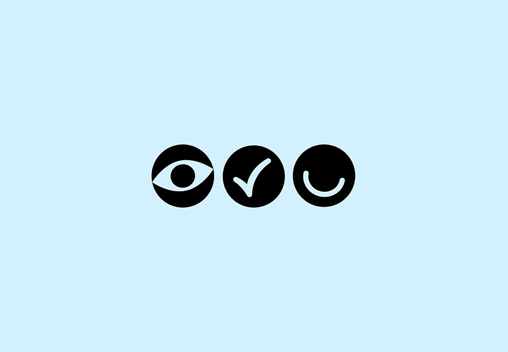
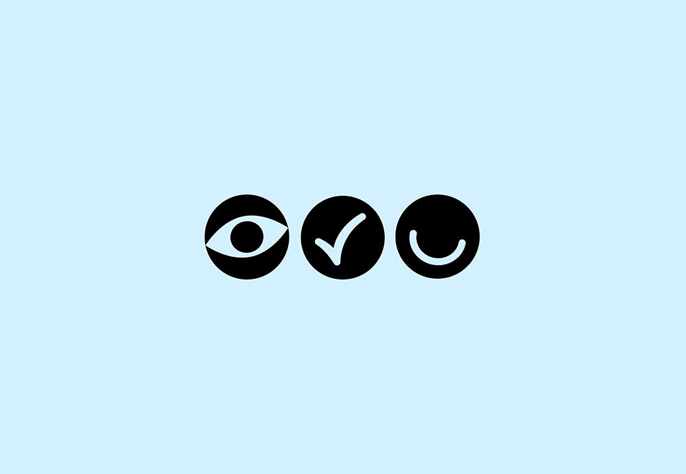
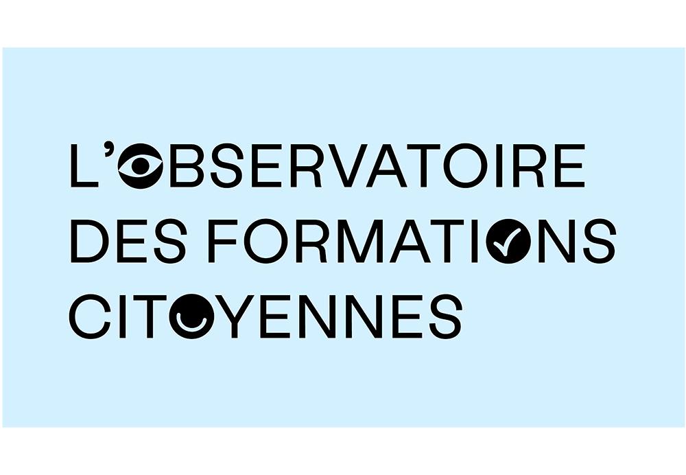
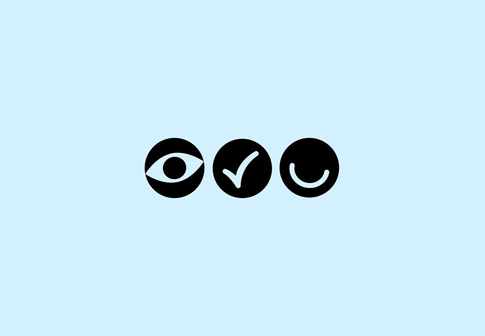

l'Observatoire des Formations Citoyennes
Conception de l’identité graphique tel un rébus, afin de rendre son image plus populaire et accessible. L’iconographie vient rythmer l’identité graphique, elle évoque différents domaines des sciences afin d’apporter des images concrètes et ancrer les enjeux de l’Observatoire dans notre environnement.
Identité graphique réalisée avec Hugo Toulotte,
qui a aussi conçu le site web, en février 2020.

 


 



